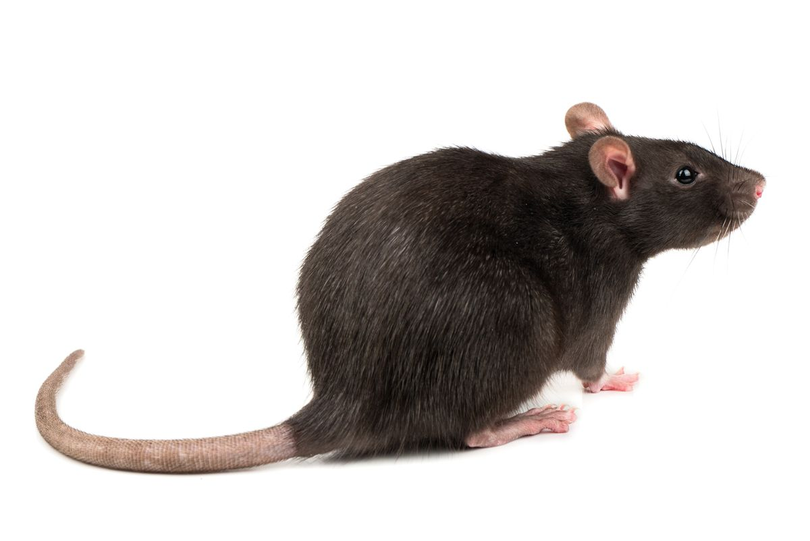

Descripción general
Los roedores comensales representan un grave peligro tanto para la integridad estructural de los inmuebles como para la salud humana. Su necesidad biológica constante de roer para desgastar sus incisivos de crecimiento continuo los lleva a dañar cableados eléctricos (con riesgo de cortocircuitos e incendios), cañerías, aislamientos, mobiliario, prendas y empaques de alimentos.
Debido a su prolífica tasa de reproducción y maduración sexual temprana, una presencia inicial no controlada puede transformarse en una severa infestación en pocas semanas.
Tipos y especies frecuentes en Uruguay
Identificar con precisión la especie es indispensable para elegir el tipo de dispositivo y su altura de colocación:
Mus musculus (Ratón doméstico o laucha)
De tamaño reducido (longitud corporal de 6 a 9 cm) y color grisáceo o castaño. Posee una gran agilidad y la capacidad de ingresar a través de aberturas minúsculas de apenas 6 mm (el grosor de un lápiz). Anida en el interior de edificaciones: alacenas, detrás de electrodomésticos, muebles y cielorrasos falsos.
Rattus rattus (Rata negra o de los tejados)
Cuerpo estilizado de color oscuro, orejas prominentes y cola más larga que la suma de su cabeza y cuerpo. Es una trepadora excepcional que se desplaza por enredaderas, cables aéreos y ramas de árboles para anidar en partes altas de las edificaciones: techos, entretechos, vigas y cielorrasos.
Rattus norvegicus (Rata noruega, de alcantarilla o parda)
Es la especie de mayor tamaño y peso (puede superar los 400 gramos). Presenta cuerpo robusto, hocico romo y orejas cortas. De hábitos predominantemente excavadores y acuáticos, suele frecuentar redes de desagüe, cámaras de saneamiento, depósitos a nivel de piso, sótanos y orillas de cursos de agua. Construye madrigueras subterráneas complejas.
Señales de infestación
Las evidencias más frecuentes de presencia de roedores incluyen:
- Ruidos nocturnos: Sonidos de correteo, chillidos o roeduras en cielorrasos, falsos techos y cámaras de aire durante la noche.
- Excrementos característicos: Fecas oscuras y brillantes encontradas en cajones, despensas, alacenas o a lo largo de los zócalos.
- Marcas de roce o grasa: Manchas oscuras producidas por el contacto continuo de su pelaje con zócalos, bordes de paredes y tuberías al transitar por sus senderos habituales.
- Madrigueras activas: Orificios en jardines, canteros, bajo contrapisos o pilas de leña y escombros.
- Elementos y cables roídos: Daños en paquetes de alimentos, zócalos de madera y cableados eléctricos.
Riesgos sanitarios asociados
Los roedores actúan como reservorios y transmisores de importantes enfermedades mediante su orina, heces, saliva o por los ectoparásitos que transportan en su pelaje:
- Leptospirosis: Infección bacteriana transmitida principalmente a través del contacto con agua o superficies contaminadas por la orina de roedores infectados.
- Hantavirus: Virus de relevancia sanitaria asociado a la inhalación de partículas suspendidas procedentes de excrementos u orina desecada de roedores silvestres.
- Salmonelosis: Contaminación bacteriana provocada al deambular sobre alimentos, vajilla y mesadas de preparación.
- Ectoparásitos: Son portadores de pulgas, piojos y ácaros que pueden migrar hacia las personas y mascotas tras la muerte del hospedador.
Plan de acción de FumiTotal
Inspección técnica integral
Determinamos la especie presente mediante el examen de excrementos y huellas, identificamos los puntos de acceso, nidos, fuentes de alimento y fuentes de agua.
Diagnóstico y dimensionamiento
Calculamos la cantidad estratégica y la distribución adecuada de estaciones de control según las dimensiones del predio.
Exclusión física y saneamiento
Asesoramos en el sellado de grietas, colocación de burletes en puertas, rejillas en desagües y bloqueo de pasos de cañerías para cortar definitivamente el ingreso.
Tratamiento con terminales portacebos de seguridad
Instalamos cajas cebaderas de material reforzado con cerradura inviolable. Este sistema garantiza que los cebos profesionales queden fijados de forma segura en su interior, impidiendo el contacto accidental de niños, mascotas u otros animales no objetivo, al tiempo que protege el producto de la intemperie.